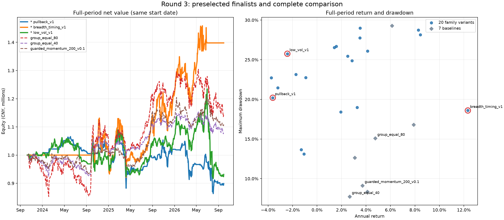

所有时段都曾用于本次探索，不能视为全新独立留出样本。这里展示冻结协议、逐阶段选出的名单以及完整的候选对比；不按 late 结果重新排序或宣称单一赢家。

训练阶段每个家族选一项；validation 后按冻结规则确定前三。★ 表示最终预选前三。
| 家族 | 训练阶段入选 | 前三名单 |
|---|---|---|
| 单周期动量 | momentum_v0 | |
| 双周期动量 | dual_momentum_v1 | |
| 均线趋势 | ma_trend_v1 | |
| 突破延续 | breakout_v1 | |
| 低波趋势 | low_vol_v1 | ★ |
| 回归趋势 | regression_v0 | |
| 趋势内回调 | pullback_v1 | ★ |
| 分组轮动 | sector_rotation_v1 | |
| 市场宽度择时 | breadth_timing_v1 | ★ |
| 相关性约束动量 | correlation_v1 |
参数来自冻结协议；结果按家族及预先固定的 variant 顺序呈现，供完整比较。
| 家族 | 候选 | 参数说明 | 冻结参数 | 训练入选 | 前三 | Full年化收益 | Full最大回撤 | Full Sharpe | Late区间收益 | Late最大回撤 | Late Sharpe | Full成本（元） | Late成本（元） |
|---|---|---|---|---|---|---|---|---|---|---|---|---|---|
| 单周期动量 | momentum_v0 | Rank positive 60-session returns | {"family":"momentum","variant":0} | ✓ | 1.57% | 26.69% | 0.185 | -8.94% | 26.69% | -0.264 | 37,882.69 元 | 9,218.64 元 | |
| 单周期动量 | momentum_v1 | Rank positive 120-session returns | {"family":"momentum","variant":1} | 3.51% | 27.74% | 0.263 | -4.61% | 27.75% | -0.002 | 29,649.13 元 | 7,447.14 元 | ||
| 双周期动量 | dual_momentum_v0 | Rank mean of positive 60/120 returns | {"family":"dual_momentum","variant":0} | 4.13% | 26.08% | 0.291 | -3.98% | 26.08% | -0.027 | 33,038.21 元 | 7,604.68 元 | ||
| 双周期动量 | dual_momentum_v1 | Rank mean of positive 120/200 returns | {"family":"dual_momentum","variant":1} | ✓ | 8.28% | 28.73% | 0.444 | -3.46% | 28.74% | 0.038 | 30,546.56 元 | 7,378.29 元 | |
| 均线趋势 | ma_trend_v0 | Rank positive close/120-session mean minus one | {"family":"ma_trend","variant":0} | 1.42% | 26.53% | 0.179 | -5.40% | 26.53% | -0.074 | 34,835.79 元 | 8,787.91 元 | ||
| 均线趋势 | ma_trend_v1 | Rank positive close/200-session mean minus one | {"family":"ma_trend","variant":1} | ✓ | 8.45% | 28.15% | 0.448 | -3.75% | 28.15% | 0.032 | 33,410.32 元 | 8,964.30 元 | |
| 突破延续 | breakout_v0 | New 60-session close high; retain held above 20-session mean | {"family":"breakout","variant":0} | -1.30% | 13.64% | -0.020 | -6.98% | 13.64% | -0.447 | 23,352.33 元 | 6,611.17 元 | ||
| 突破延续 | breakout_v1 | New 120-session close high; retain held above 20-session mean | {"family":"breakout","variant":1} | ✓ | -1.08% | 13.12% | -0.015 | -6.25% | 13.12% | -0.399 | 19,255.68 元 | 6,226.72 元 | |
| 低波趋势 | low_vol_v0 | Above 120-session mean with positive 60-session return; rank least 60-session volatility | {"family":"low_vol","variant":0} | -3.73% | 22.73% | -0.138 | -14.57% | 22.73% | -0.840 | 39,096.85 元 | 11,545.63 元 | ||
| 低波趋势 | low_vol_v1 | Above 200-session mean with positive 60-session return; rank least 120-session volatility | {"family":"low_vol","variant":1} | ✓ | ★ | -2.43% | 25.75% | -0.059 | -16.92% | 25.75% | -0.975 | 37,855.12 元 | 10,397.03 元 |
| 回归趋势 | regression_v0 | Above 120-session mean; rank positive 60-session log slope times R-squared | {"family":"regression","variant":0} | ✓ | 2.86% | 24.87% | 0.238 | -4.71% | 24.87% | -0.066 | 31,222.96 元 | 7,915.02 元 | |
| 回归趋势 | regression_v1 | Above 200-session mean; rank positive 120-session log slope times R-squared | {"family":"regression","variant":1} | 3.52% | 29.00% | 0.265 | -1.15% | 29.00% | 0.129 | 25,051.46 元 | 7,818.24 元 | ||
| 趋势内回调 | pullback_v0 | Above 120-session mean with positive 60-session return; rank negative 5-session return | {"family":"pullback","variant":0} | -3.22% | 21.46% | -0.135 | -9.27% | 18.85% | -0.523 | 57,878.84 元 | 15,745.59 元 | ||
| 趋势内回调 | pullback_v1 | Above 200-session mean with positive 60-session return; rank negative 20-session return | {"family":"pullback","variant":1} | ✓ | ★ | -3.62% | 20.20% | -0.211 | -12.27% | 18.23% | -1.004 | 33,892.51 元 | 8,401.62 元 |
| 分组轮动 | sector_rotation_v0 | Rank positive median 60-session return within each catalog group | {"family":"sector_rotation","variant":0} | -0.92% | 22.76% | 0.068 | -11.67% | 22.76% | -0.508 | 36,858.06 元 | 8,529.54 元 | ||
| 分组轮动 | sector_rotation_v1 | Rank positive median 120-session return within each catalog group | {"family":"sector_rotation","variant":1} | ✓ | 2.50% | 25.45% | 0.223 | -11.82% | 25.45% | -0.422 | 30,011.17 元 | 8,348.65 元 | |
| 市场宽度择时 | breadth_timing_v0 | Rank positive 60-session momentum above 120-session mean; halve budget below 50% group breadth | {"family":"breadth_timing","variant":0} | 3.27% | 18.98% | 0.265 | -4.77% | 14.35% | -0.234 | 31,428.74 元 | 7,548.47 元 | ||
| 市场宽度择时 | breadth_timing_v1 | Rank positive 120-session momentum above 200-session mean; zero budget below 50% group breadth | {"family":"breadth_timing","variant":1} | ✓ | ★ | 12.33% | 18.60% | 0.691 | 8.74% | 12.21% | 0.648 | 23,437.95 元 | 7,353.98 元 |
| 相关性约束动量 | correlation_v0 | Rank positive 60-session momentum above 120-session mean; greedy 60-session return correlation <= 0.8 | {"family":"correlation","variant":0} | -1.72% | 23.14% | -0.003 | -20.35% | 23.15% | -1.334 | 38,750.15 元 | 9,830.06 元 | ||
| 相关性约束动量 | correlation_v1 | Rank positive 120-session momentum above 200-session mean; greedy 120-session return correlation <= 0.7 | {"family":"correlation","variant":1} | ✓ | 1.95% | 18.42% | 0.198 | -14.22% | 18.43% | -0.851 | 34,724.98 元 | 9,809.81 元 |
| 基准 | Full年化收益 | Full最大回撤 | Full Sharpe | Late区间收益 | Late最大回撤 | Late Sharpe | Full成本（元） | Late成本（元） |
|---|---|---|---|---|---|---|---|---|
| 20日轮动 | 6.13% | 29.28% | 0.364 | 3.17% | 25.50% | 0.294 | 70,175.42 元 | 16,933.89 元 |
| 200日防守动量 | 3.72% | 9.13% | 0.439 | -5.91% | 9.12% | -0.781 | 36,338.24 元 | 6,450.24 元 |
| 200日逆波动分散 | 3.08% | 12.63% | 0.339 | -3.99% | 7.26% | -0.577 | 88,389.94 元 | 22,485.29 元 |
| 买入持有（上限80%） | 7.89% | 16.79% | 0.511 | -2.57% | 12.03% | -0.108 | 5,342.30 元 | 3,111.00 元 |
| 40%买入持有 | 4.12% | 8.35% | 0.462 | -1.50% | 6.44% | -0.180 | 1,175.55 元 | 1,541.94 元 |
| 分组等权80% | 4.75% | 15.08% | 0.349 | -10.76% | 12.95% | -0.767 | 35,641.74 元 | 8,921.19 元 |
| 分组等权40% | 2.67% | 7.74% | 0.339 | -5.53% | 6.75% | -0.813 | 17,962.10 元 | 4,735.62 元 |
| 预选配置 | 时段 | 成本倍数 | 收益（Full年化 / Late区间） | 最大回撤 | Sharpe | 交易成本（元） |
|---|---|---|---|---|---|---|
| pullback_v1 | full | 2× | -4.77% | 21.97% | -0.301 | 66,927.59 元 |
| pullback_v1 | late | 2× | -12.49% | 18.23% | -1.026 | 16,461.12 元 |
| breadth_timing_v1 | full | 2× | 11.53% | 18.85% | 0.654 | 46,514.32 元 |
| breadth_timing_v1 | late | 2× | 10.23% | 12.41% | 0.734 | 14,859.01 元 |
| low_vol_v1 | full | 2× | -3.68% | 25.92% | -0.133 | 75,771.84 元 |
| low_vol_v1 | late | 2× | -17.84% | 25.92% | -1.040 | 20,869.90 元 |
| group_equal_80 | full | 2× | 3.46% | 15.54% | 0.280 | 70,951.32 元 |
| group_equal_80 | late | 2× | -11.61% | 13.39% | -0.839 | 18,091.19 元 |
| group_equal_40 | full | 2× | 2.04% | 8.04% | 0.271 | 36,023.37 元 |
| group_equal_40 | late | 2× | -5.99% | 6.98% | -0.886 | 9,496.77 元 |
成本为佣金与滑点合计的人民币金额。